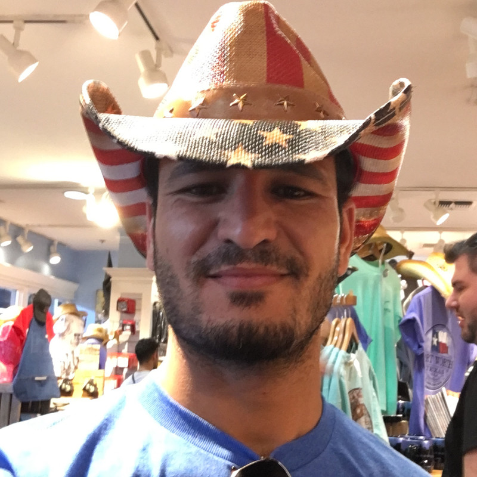

Wadhah Ben Jabeur

Summary
Curious, motivated, open and communicative. Still, in search of new opportunities to move forward in my professional life, I am willing to sacrifice to improve my skills, gain experience and have the necessary knowledge in my field and others (mechanics, energy, management, soft-skills, etc.) and build my career.
Education
- Aeronautical system ingineer/Pilot, Aviation school of Borj El Amri (2007-2012)
Work Experience
Member of Planning And Operational Group - Tunisian Air Force
June 2013 - April 2015
- participate in the Squadron long and short term planning.
- Discuss the problems encountered during missions with the Planning and Operations Commander .
- Communicate the innovation and improvement tools with Unit Commander.
Operatioan Squadron Commander - Tunisian Air Force
April 2015 - May 2017
- Discuss operations details within the squadron.
- Give junior pilots detailed instructions about their missions.
- Deal with difficulties that can affect the missions success.
Skills
- Leadership ★★★★
- Communication★★★★
- Problem Solving★★★★
Awards And Certifications
- Oral Proficiency Skills for Aviators - Lackland Air Force Base, Texas USA (2017)
Other
© Wadhah Ben Jabeur